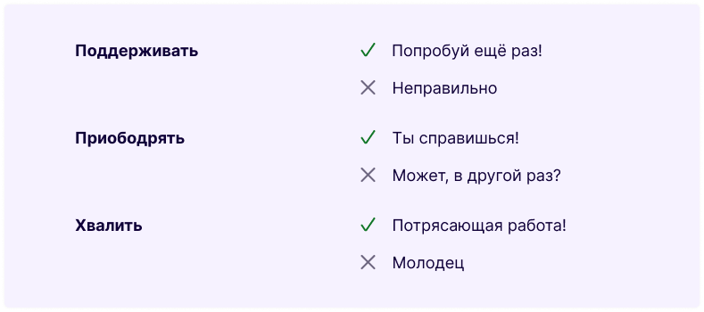
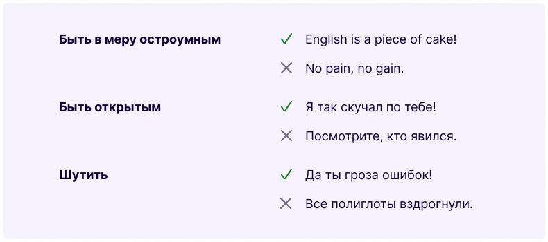
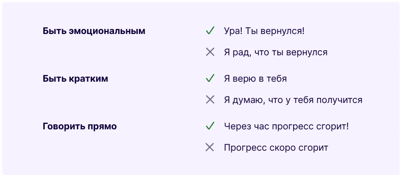
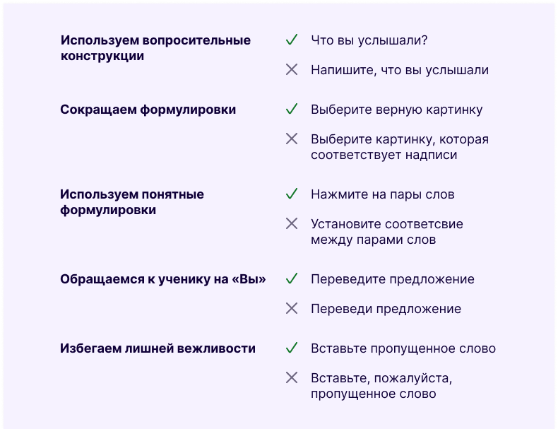
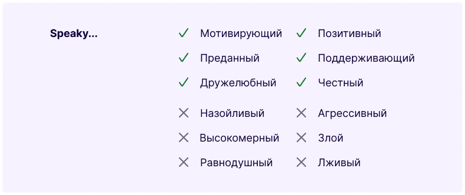
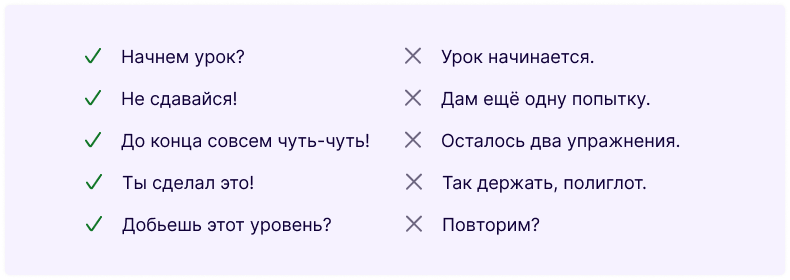
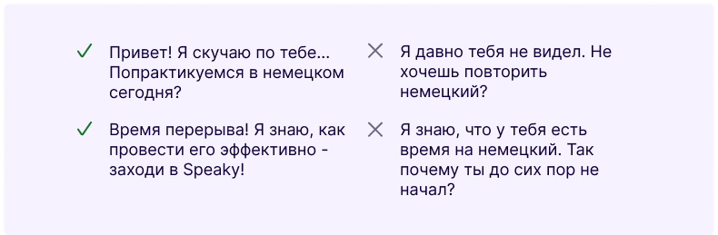
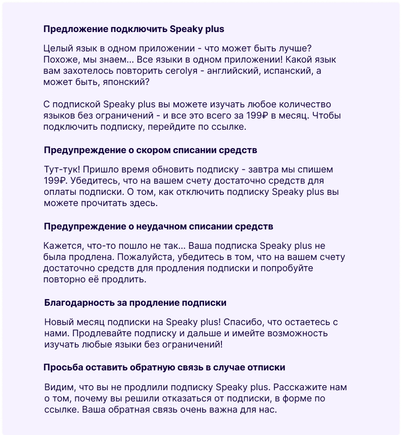
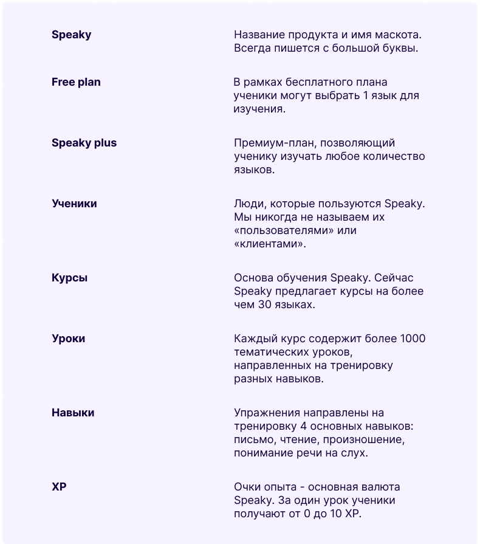

Тон
Тон - самый важный принцип UX-копирайтинга. Для нас важно, чтобы тон нашего бренда подчеркивал его индивидуальность. Наш тон обладает тремя ключевыми качествами, которые проявляются как в том, что мы говорим, так и в том, как мы это говорим. Работая вместе, эти качества делают все, что мы пишем, уникальным. Speaky заботливый, дружелюбный, выразительный.
Заботливый
Изучение иностранных языков строится на маленьких шагах. Мы четко объясняем эти шаги, отмечаем успехи учащихся и поощряем их, когда они спотыкаются. Мы никогда не отталкиваем наших учеников, не заставляет их чувствовать себя виноватыми и неспособными добиться успеха. Быть заботливым означает...
Дружелюбный
Мы убеждены, что эффективное обучение возможно только в комфортной среде. Именно поэтому мы делаем все, чтобы наши ученики подружились со Speaky. Это выражается и в том, как мы говорим со своими учениками. Быть дружелюбным означает...
Выразительный
Каждый из наших учеников должен понимать, о чем мы хотим ему сказать. Поэтому мы уделяем особое внимание тому, чтобы сохранять суть посыла, используя минимальное количество слов. Речь Speaky состоит из лаконичных и выразительных фраз. Быть выразительным означает...
Упражнения
Каждый день миллионы учеников выполняют упражнения от Speaky. Мы уверены, что обучение должно воодушевлять, а не вызывать фрустрацию. Сформулировать задание так, чтобы оно было понятно каждому пользователю - не самая простая задача. В этом разделе мы постарались рассказать о том, как эту задачу решают в Speaky.
Чат со Speaky
Тон Speaky полностью совпадает с общим тоном бренда. Speaky заботливый и дружелюбный, поддерживающий и ненавязчивый. Ученики часто получают сообщения от Speaky в чате - чаще всего Speaky пишет им, чтобы похвалить или напомнить о предстоящем уроке. От того, как Speaky будет разговаривать с учениками, во многом зависит успех бренда. Реплики Speaky должны быть дружелюбными и поддерживающими.
Где ученик может пересечься со Speaky? На самом деле, почти везде: Speaky иногда заглядывает на уроки, чтобы похвалить ученика, присылает напоминания о предстоящем уроке через электронную почту или уведомления.
Speaky на уроках
Speaky в уведомлениях
Монетизация
Мы обращаем особое внимание на то, как разговариваем с учениками о премиум-продуктах.
Глоссарий
В этом разделе мы расскажем о терминах, которые мы используем, когда говорим о Speaky и связанных с ним продуктах. Познакомьтесь с этими терминами и используйте их правильном контексте - так мы будем уверены, что говорим об одном и том же.
